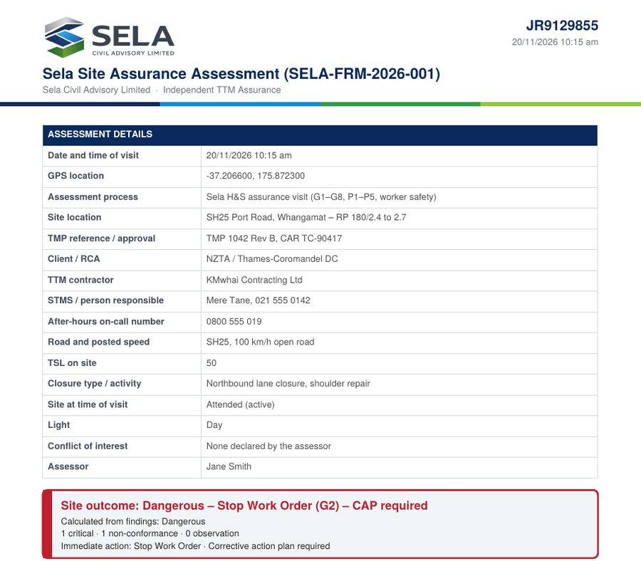

The top of the completed assessment shows the outcome and every finding
With signal, it gets a report number like SELA-SA-2026-00042 and a verify link, printed on the PDF
Tap Email / share PDF to send the report from site, or Download PDF to save it
WHO THE REPORT IS FROM
Reports you complete say “Completed by [your name], [your company] using the Sela TTM Assurance platform”. It is your company’s own assessment, not an independent Sela report.

Your completed assessment shows the outcome and every finding at the top. With signal, it gets a report number and a verify link, printed on the PDF. Tap email or share PDF to send the report from site. Remember, reports you complete say they were completed by you, for your company, using the Sela platform. It's your company's own assessment, not an independent Sela report.